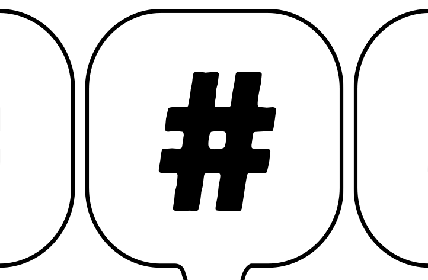

{ graphic design }
Alfabeto Civico

Alfabeto Civico is A collaborative game about the environment, common good, culture, democracy and economy.
Designed to be played as a discussion tool during civic education classes in middle school, this card deck is an occasion for the players to discuss and
elaborate ideas for a sustainable future.
The project was developed in collaboration with Fondazione Donat-Cattin
and Polo Del '900.
A project by We Are Müesli.
I took care of the visual design of the cards.
Printed in 2022.